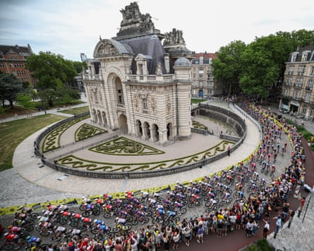
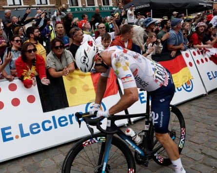

Crashes, infighting and relentless stress characterised a frantic opening stage of the 2025 Tour de France , which was won by Jasper Philipsen, of Alpecin-Deceuninck, in Lille Metropole.
Winner of three stages in 2024, the Belgian sprinter was too quick for the Eritrean Biniam Girmay, of Intermarché Wanty, and Norway’s Søren Wærenskjold, of Uno-X Mobility, and claimed his first yellow jersey.
Eighteen kilometres from Lille, the gusting crosswinds forced a decisive coup, as a select group, including Philipsen, moved ahead. In the front group were the favourites, Tadej Pogacar of UAE Team Emirates-XRG and Jonas Vingegaard of Visma Lease a bike.
Behind, there were multiple splits in the bunch, with more scrambling required by those who had lost the wheel in front of them. Among those cut adrift were the Olympic road race champion, Remco Evenepoel of Soudal Quick-Step, and Primoz Roglic of Bora-Hansgrohe, five times a Grand Tour winner.
In a chaotic opening stage, raced at breakneck speeds through incessant crosswinds, there were soon crashes, punctures and dropped riders, with many left chasing back frantically through the race convoy. Among the casualties were Filippo Ganna of Ineos Grenadiers, Visma Lease a bike’s Simon Yates, the Giro d’Italia winner, the former world champion Julian Alaphilippe, now with Tudor Pro Cycling , Bahrain Victorious’s French hope Lenny Martinez, and Florian Lipowitz of Bora-Hansgrohe.
The peloton passes the Porte de Paris arch near the start of the first stage of the Tour de France.Photograph: Anne-Christine Poujoulat/AFP/Getty Images
The sight of first Martinez and then Yates, battling alone to rejoin the peloton, was puzzling, given their supposed protected status. Eventually all of them, apart from the stricken Ganna, who quit the race, rejoined the back of the peloton, but with frayed nerves after a typically stressful start to the Tour.
The stage looped south-west and then headed north, through the Pas de Calais, before turning back towards Lille and skirting the Belgian border as the peloton sped towards the finish.
The early breakaway of five riders survived 70km before the peloton reeled them in shortly before the first intermediate sprint, at La Motte-au-Bois, won by Jonathan Milan of Lidl-Trek from Bryan Coquard, riding for Cofidis, and Girmay.
Mattéo Vercher of Total Energies gets back on his bike after colliding with Cofidis’s Benjamin Thomas.Photograph: Benoît Tessier/Reuters
The subsequent lull was filled by the French duo Benjamin Thomas, a gold medallist on the track in last year’s Paris Olympics, and Mattéo Vercher.
A peloton that was momentarily at ease was content to give them their head on the approach to the stage’s two short climbs, the Mont Cassel and Mont Noir, as they built a lead nudging a minute.
But in a moment that seemed to epitomise the home nation’s malaise, the pair somehow managed to sabotage each other when sprinting for the climbing points at the fourth category climb to Cassel, Thomas’s rear wheel sliding across the cobbles and taking a furious Vercher down, as they crested the top of the climb.